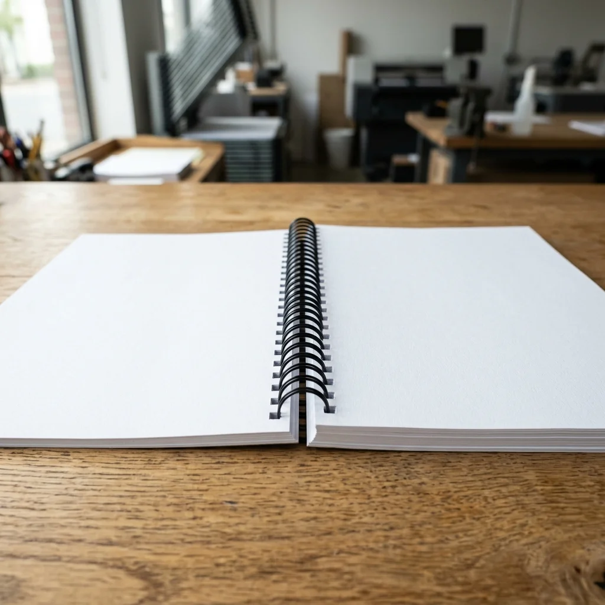
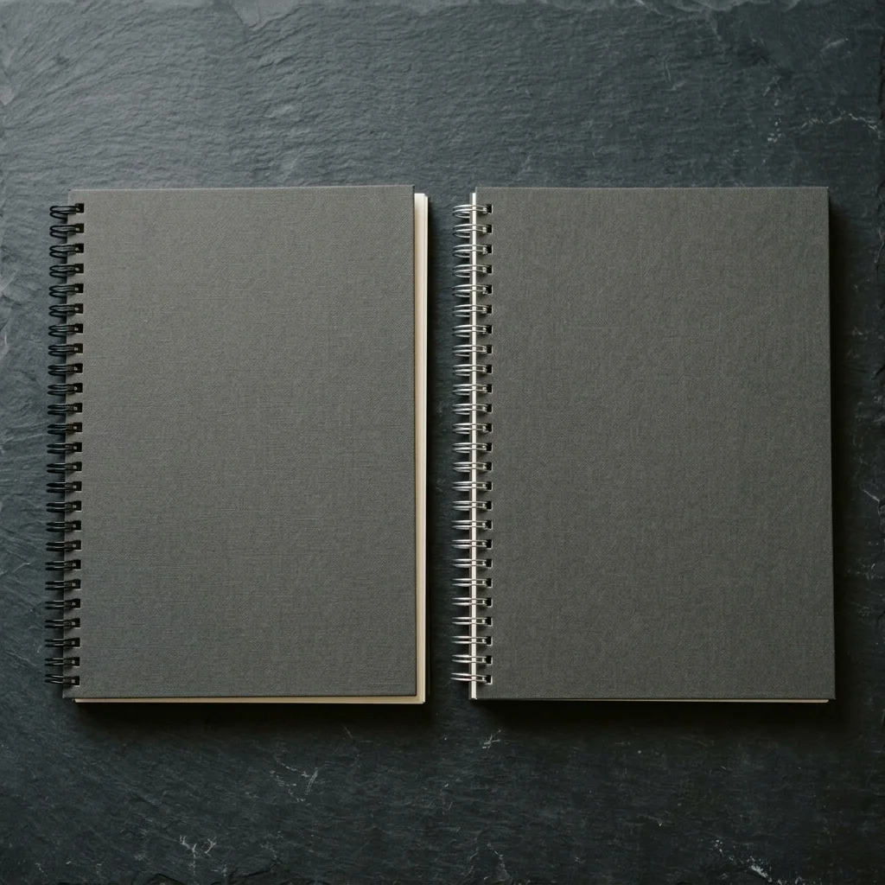
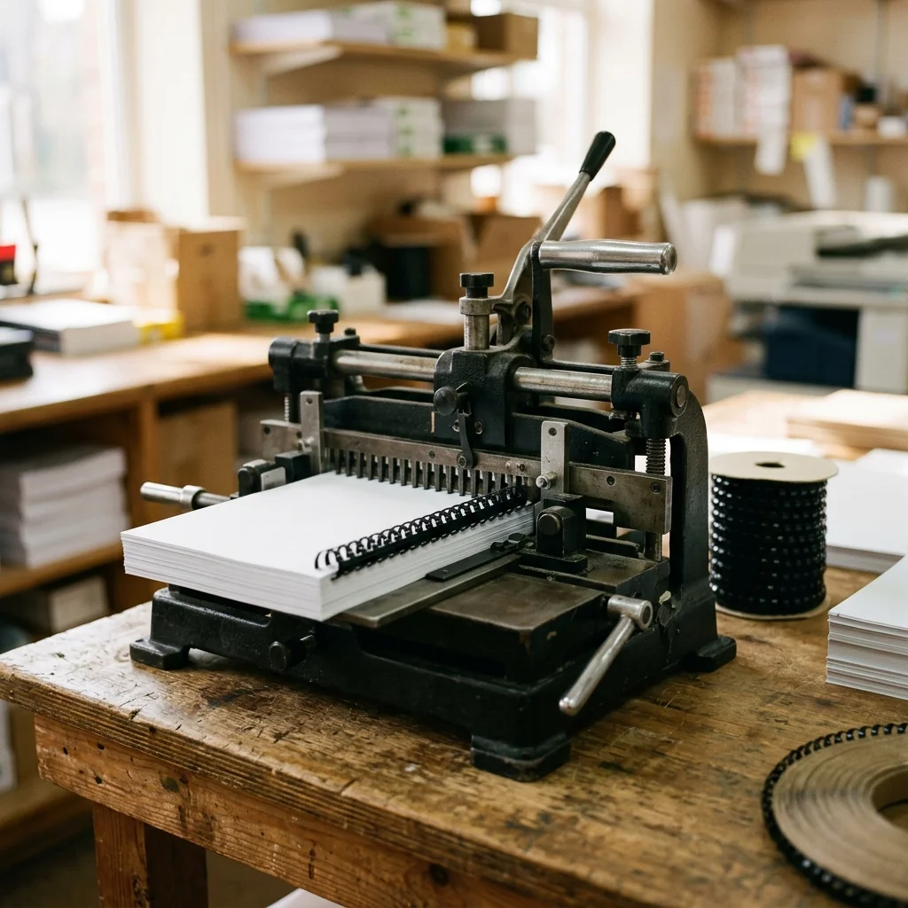

Todo lo que necesitas saber sobre el sistema de encuadernación más versátil: materiales, tipos, aplicaciones y por qué es la opción preferida para documentos de consulta frecuente en Puebla.
Cotizar encuadernación en espiralLa encuadernación en espiral es un sistema mecánico de unión de hojas que utiliza un filamento continuo enrollado en forma helicoidal, el cual se inserta a través de perforaciones realizadas a lo largo del borde del documento. A diferencia de otros métodos como el encuadernado térmico, donde las hojas se adhieren con pegamento caliente, la espiral atraviesa físicamente cada perforación, lo que permite que las páginas giren de forma independiente sobre su propio eje.
El material de la espiral puede ser plástico (PVC, nylon o polipropileno) o metálico (alambre galvanizado con recubrimiento). Las perforaciones se realizan con una máquina perforadora especializada que genera orificios redondos equidistantes, normalmente con un patrón de perforación de 4:1 (4 orificios por pulgada) o 5:1 en espirales de menor diámetro. El paso de perforación determina la compatibilidad entre la espiral y el documento, por lo que es importante que ambos elementos coincidan.
El proceso de encuadernación en espiral consta de tres etapas: primero se perfora el bloque de hojas junto con las cubiertas, después se coloca la espiral en la máquina insertadora que la enrolla a través de los orificios, y finalmente se cortan los extremos sobrantes de la espiral. Todo el procedimiento es rápido y no requiere tiempo de secado ni prensado, lo que lo convierte en el método de encuadernación con menor tiempo de producción.
En nuestro taller de encuadernación en Puebla trabajamos con espirales de diámetros desde 6 mm hasta 50 mm, lo que permite encuadernar documentos desde 15 hojas hasta más de 400, cubriendo las necesidades de estudiantes de universidades como la BUAP, UDLAP, UPAEP e Ibero Puebla, así como de empresas y dependencias gubernamentales de la región.

Cada tipo de espiral tiene características técnicas distintas que determinan su uso ideal. Conocer las diferencias te ayuda a elegir la opción correcta para tu proyecto.
La espiral de plástico se fabrica a partir de PVC o nylon extruido en forma de resorte continuo. Su flexibilidad le permite absorber golpes y deformaciones sin romperse, lo que la hace muy resistente al uso diario.
Recomendado para: trabajos escolares, manuales operativos, recetarios, cuadernos de notas y materiales de capacitación.
El espiral metálico se manufactura con alambre de acero galvanizado, frecuentemente recubierto con una capa de nylon de color. Ofrece un aspecto más limpio y profesional que el plástico, con un perfil más delgado.
Recomendado para: presentaciones corporativas, catálogos de producto, agendas personalizadas y documentos que se exhiben al público.

La versatilidad del espiral lo convierte en la solución de encuadernación más utilizada en ámbitos académicos, corporativos y personales en Puebla.
Los estudiantes de universidades en Puebla utilizan la encuadernación en espiral para trabajos semestrales, antologías, portafolios de evidencias y apuntes compilados. La apertura a 360 grados permite estudiar con el cuaderno doblado sobre sí mismo, ocupando poco espacio en el escritorio o en las bancas del salón de clases. Muchas facultades de la BUAP, la UDLAP y la UPAEP solicitan este formato para entregas parciales por su practicidad y bajo costo.
Empresas en la zona metropolitana de Puebla encuadernan en espiral sus manuales de procedimientos, reglamentos internos, materiales de inducción para nuevos empleados y presentaciones para clientes. El espiral metálico es particularmente popular en empresas del corredor industrial Puebla-Tlaxcala que necesitan documentos técnicos resistentes al uso constante en planta.
Los manuales de operación, guías de mantenimiento y protocolos de seguridad industrial requieren un encuadernado que permita mantener el documento abierto y plano mientras el técnico trabaja con ambas manos. La espiral es el único sistema que permite esto sin que las páginas se cierren solas, una ventaja determinante frente al encuadernado en canutillo o la rústica fresada.
Los recetarios de cocina, cuadernos de viaje, bitácoras de ejercicio y planners personalizados se benefician enormemente del espiral. Al poder abrirse completamente y apoyarse sobre la mesa sin moverse, el documento queda visible mientras cocinas, entrenas o tomas notas. En ALdigital hemos encuadernado cientos de recetarios personalizados para negocios gastronómicos de Puebla.
Organizaciones, ONG y dependencias gubernamentales en Puebla utilizan la encuadernación en espiral para producir materiales didácticos, guías de talleres y cuadernillos de trabajo para cursos presenciales. La resistencia del espiral al uso repetido y la facilidad para fotocopiar páginas individuales sin dañar el encuadernado hacen que sea la opción más práctica para estos fines.
Los calendarios de escritorio y de pared utilizan encuadernación en espiral para permitir que cada mes se doble hacia atrás sin desprenderse. Las agendas personalizadas y planificadores mensuales también aprovechan esta característica. En nuestro taller ofrecemos el servicio completo: impresión digital de alta resolución más encuadernado en espiral.
Las hojas giran completamente sobre el eje de la espiral, permitiendo doblar el documento sobre sí mismo. Esto reduce a la mitad el espacio que ocupa cuando está abierto, algo que ningún encuadernado de lomo fijo puede ofrecer. Es la razón principal por la que manuales, recetarios y materiales de consulta eligen este sistema.
El proceso de perforado e inserción del espiral toma pocos minutos, sin necesidad de esperar secado de pegamento ni tiempo de prensado. Un documento estándar puede estar listo en menos de 10 minutos una vez impresas las hojas, lo que lo convierte en la solución de encuadernación más rápida disponible en nuestro taller.
Tanto los materiales (espiral, cubiertas) como el proceso son económicos, lo que hace que la encuadernación en espiral sea la opción con mejor relación costo-beneficio para volúmenes bajos y medios. Los estudiantes de Puebla lo prefieren precisamente porque no encarece la presentación de sus trabajos académicos.
Funciona con documentos tamaño carta, oficio, medio oficio, doble carta y formatos personalizados. También se adapta a orientación vertical (portrait) y horizontal (landscape), lo que permite encuadernar desde cuadernos apaisados hasta planos arquitectónicos plegados sin limitaciones de formato.
El espiral de plástico no se oxida ni se deforma permanentemente con el uso diario. El espiral metálico, por su parte, mantiene su forma rígida durante años. Ambas opciones protegen el documento de manera efectiva cuando se combinan con cubiertas de acetato y contraportada de pasta dura, resistiendo el manejo constante sin deteriorarse.
Las espirales de plástico se fabrican en más de 15 colores distintos, incluyendo tonos translúcidos y neón. Esto permite coordinar el color de la espiral con la imagen corporativa de una empresa, el color institucional de una universidad o simplemente con las preferencias estéticas del usuario.
Elegir el sistema de encuadernación correcto depende del uso que le darás al documento, el volumen de hojas y la presentación que necesitas. Esta comparación te ayuda a tomar una decisión informada.
| Característica | Espiral | Wire-O | Térmico |
|---|---|---|---|
| Apertura 360° | Sí | Sí | No |
| Capacidad máxima | 450+ hojas | 120 hojas | 300 hojas |
| Tiempo de producción | 5-10 min | 10-15 min | 5-8 min |
| Perforaciones visibles | Sí | Sí | No |
| Costo relativo | $ | $$ | $$ |
| Apariencia profesional | Media-Alta | Alta | Alta |
| Facilidad de fotocopiado | Excelente | Excelente | Limitada |
| Uso ideal | Manuales, trabajos escolares | Catálogos, agendas | Informes ejecutivos |
Si tu prioridad es la funcionalidad y el costo, la espiral es la mejor opción. Si buscas un acabado más elegante para documentos corporativos, considera el Wire-O. Y si prefieres un lomo limpio sin perforaciones visibles, el encuadernado térmico es la alternativa indicada. En ALdigital Puebla realizamos los tres sistemas, y te asesoramos para que elijas el más adecuado según tu proyecto.
Recepción del documento
Nos entregas tus hojas ya impresas o nos envías tu archivo digital por WhatsApp para que lo imprimamos en nuestro taller. Revisamos el número de páginas, tamaño y orientación para determinar el diámetro de espiral adecuado.
Selección de materiales
Elegimos contigo el tipo de espiral (plástico o metálico), el color, el tipo de cubierta frontal (acetato transparente o cartulina de color) y la contraportada. Te asesoramos según el uso final del documento.
Perforado e inserción
Perforamos el bloque de hojas junto con las cubiertas en nuestra máquina perforadora profesional. Luego insertamos la espiral con la máquina enrolladora, asegurando que cada orificio quede correctamente enhebrado para un giro suave.
Control de calidad y entrega
Verificamos que las páginas giren libremente, que la espiral quede firmemente sujeta y que las cubiertas estén alineadas. Cortamos los extremos de la espiral con el ángulo correcto para evitar que se enganche, y te entregamos el documento terminado.

La capacidad del espiral depende del diámetro que se utilice. Un espiral de 10 mm soporta entre 60 y 70 hojas, mientras que los diámetros más grandes, como el de 50 mm, pueden unir hasta 450 hojas tamaño carta. En ALdigital Puebla manejamos toda la gama de diámetros para adaptarnos al grosor exacto de tu documento, ya sea un trabajo escolar de pocas páginas o un manual técnico extenso.
El espiral de plástico (también llamado coil o espiral continuo) está fabricado en PVC o nylon y es más económico, ligero y resistente a golpes; se consigue en una amplia variedad de colores y es ideal para trabajos escolares y manuales de uso cotidiano. El espiral metálico, en cambio, está hecho de alambre galvanizado o recubierto en nylon, ofrece mayor rigidez y un aspecto más profesional, y es la opción preferida para documentos corporativos y presentaciones formales donde la estética importa tanto como la funcionalidad.
En ALdigital, la encuadernación en espiral es uno de los procesos más rápidos que ofrecemos. Un documento estándar de tamaño carta queda listo en cuestión de minutos una vez que tenemos las hojas impresas y perforadas. Si además necesitas impresión, el tiempo total depende del volumen de páginas, pero la mayoría de los proyectos se entregan el mismo día, lo cual es especialmente útil para estudiantes de la BUAP, UDLAP o UPAEP que requieren entregas de último momento.
Sí, esa es precisamente una de las ventajas más valoradas de la encuadernación en espiral. Al girar las hojas completamente sobre sí mismas, el documento ocupa la mitad de espacio en el escritorio, lo que facilita la consulta mientras se toman notas o se trabaja en la computadora. Esta apertura total de 360 grados también simplifica el proceso de fotocopiado y escaneo, ya que las páginas quedan perfectamente planas sin necesidad de forzar el lomo.
Lo más común es utilizar una cubierta frontal de acetato transparente (mica cristal) para dejar visible la portada del documento, combinada con una contraportada de cartulina gruesa o pasta dura de polipropileno que proteja las hojas por detrás. En ALdigital ofrecemos ambas opciones y también podemos usar portadas de cartulina de color, cartoncillo kraft o pastas texturizadas si buscas un acabado diferente para recetarios, cuadernos personalizados o materiales de capacitación empresarial.
Sí. Aunque el tamaño carta (21.6 x 27.9 cm) y medio oficio son los formatos más solicitados, la encuadernación en espiral también se aplica a tamaños oficio, doble carta y formatos personalizados. La única limitante es la longitud de la espiral disponible y la capacidad de la perforadora, pero en nuestro taller en Puebla contamos con equipo que permite trabajar anchos de perforación amplios, adecuados para planos arquitectónicos plegados, catálogos panorámicos y cuadernos apaisados.
Blvd. 18 Sur 6130, Jardines de San Manuel,
72570, Heroica Puebla de Zaragoza, PUE, MX
Lun - Vie: 09:00 - 19:30
Sáb: 09:00 - 14:30
Envíanos tu archivo o trae tus hojas impresas a nuestro taller en Jardines de San Manuel. Te asesoramos sobre el tipo de espiral, cubiertas y acabado más adecuado para tu documento.
Cotizar por WhatsApp